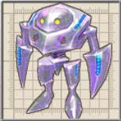

ザリガニですか・・・。
名前のネタ切れなのでしょうか・・・。

黄金の魔王が右腕、<<聖討将軍>> の誇りにかけて、ラグナ達の行く手を阻む。

いつの間にか意志を持ったらしい。
目次 > ゲームについて > 日本Falcom 攻略 > ZWEI II > 敵キャラ一覧 > 螺旋要塞メルセデク
らんの眼
ZWEI II (ツヴァイ 2、ZWEI II Plus)
| 概要 | 情報 | 攻略チャート |
| フード交換 | ペットについて | ボス戦 |
| 敵キャラ一覧 | ハンターランク | G-コロッセオ |
| アイテム一覧 | ガジェット一覧 | トレジャー一覧 |
| ダンジョン一覧 | クリアデータ特典 | Plusの追加要素 |
| ZWEI II攻略へ | 目次へ戻る |
| [ セクンドゥム廃坑 ] [ オルディウム神殿 ] [ 金闇の森 ] [ アウロン大鉄塔 ] [ ムーンブリア城 ] [ 星ヶ峰 ] [ ルナ＝ムンドゥス ] [ メルセデク ] |
| 名前 | 画像 | レベル | HP | フード | メモ |
| れぎおん－R | 25 | 19913 | ターキー | 紅い魔石を中心に造られた人形兵士。混乱の槍と四方に放つレーザーで戦う。 | |
| れぎおん－G | 26 | 21844 | パイナップル | 翠の魔石を中心に造られた人形兵士。毒性の槍と方向転換する特殊光弾を使う。 | |
| かおろっくあい | 23 | 16356 | うなぎの蒲焼き | 突進をしてくる不気味な怪物。岩のバリアで身を守っているが・・・ | |
| かおしっくあい | 23 | 16356 | うなぎの蒲焼き | 脳と目玉のみの不気味な生物。岩のバリアは無くなったが目玉ら放つ光線には注意。 | |
| たいらんと | |
29 | 84796 | なし | 魔族がザリガニを改造して造った強力な生物兵器。原型の殆どをとどめていない。 ザリガニですか・・・。 |
| あんのうん－α | 27 | 23879 | ワンタンメン | 正体不明の生物。近づくと回転して攻撃し、離れるとビームを放つ。 | |
| あんのうん－Σ | 27 | 23879 | ワンタンメン | 正体不明の生物。アメンボのように近づき、スキをついて頭突きを放つ。 | |
| あんのうん－β | 28 | 26019 | エリンギ | 正体不明の生物。高速移動からの連続攻撃は脅威の一言。 | |
| あんのうん－γ |  | 28 | 26019 | エリンギ | 正体不明の生物。手が鎌のようになっており、強烈な横薙ぎを繰り出す。 名前のネタ切れなのでしょうか・・・。 |
| 魔王ルシアン | |
30 | 284306 | なし | <<金色の魔王>>の異名で恐れられた女神に背きし堕天使の一人。ミアの体を乗っ取って復活した。 |
| 真テルミドール | 27 | 262670 | なし | 魔王ミアの魔力と、自身の魔力と闘気を一体化させる暗黒の奥義<<魔神鎧>> を使い、強くなったテルミドール。 黄金の魔王が右腕、<<聖討将軍>> の誇りにかけて、ラグナ達の行く手を阻む。 |
|
| メルセデク・コア | |
29 | 141328 | なし | 魔王ミアの魔力を得ようとして暴走した螺旋要塞メルセデクのコア部分。 いつの間にか意志を持ったらしい。 |
| 名前 | 画像 | レベル | HP | フード | メモ |
| [ セクンドゥム廃坑 ] [ オルディウム神殿 ] [ 金闇の森 ] [ アウロン大鉄塔 ] [ ムーンブリア城 ] [ 星ヶ峰 ] [ ルナ＝ムンドゥス ] [ メルセデク ] |
| 概要 | 情報 | 攻略チャート |
| フード交換 | ペットについて | ボス戦 |
| 敵キャラ一覧 | ハンターランク | G-コロッセオ |
| アイテム一覧 | ガジェット一覧 | トレジャー一覧 |
| ダンジョン一覧 | クリアデータ特典 | Plusの追加要素 |
| ページの上部へ | ZWEI II 攻略へ | 目次へ戻る |